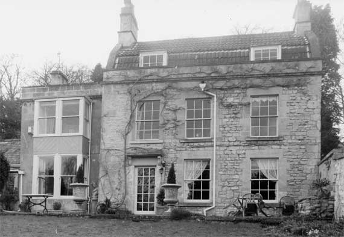

Type of building:
Detached house
Listing:
Grade ll
Plan and elevation:
Double pile. Two storeys with attic dormers.
Summary of the probable main building
history:
Late 18th Century (with possible 17th Century origins). Additions in the early
and late 19th Century.

East elevation
Exterior:
East elevation: Constructed of coursed squared rubble stone with dressed stone
quoins. Evidence of earlier rendering is present. Two six-over-six sash windows
on the ground floor with dressed stone surrounds. Entry to the left with a stone
hood over supported on replacement stone brackets. Three six-over-six sash windows
on the first floor with dressed stone surrounds. Tiled mansard (gabled gambrel)
roof with a parapet and cornicing. The roof verges are raised and capped with
coping stones. There are two dormers in the roof. Each gable end has an ashlar
chimney stack. To the left of this main building there is a two-storied ashlar
extension somewhat set back. A bay front has been added to the extension at a
later period. The bay is wood clad and with sash windows of plate glass and with
horns. To the left there is a further extension of ashlar construction, again
set back, single storied, under a slated roof and with a tall ashlar stack on
the left gable end.
The west elevation presents a complex developmental pattern of extensions to the main building and constructed on variable building lines. Central placed there is an ashlar two storied extension with an attic area. Butt jointed to the left of this and set back there is another two storied extension containing the principal entry and this, in turn, has a set back single storied ashlar extension. To the right of the central extension and butt jointed to it there is a single storied coursed rubble stone extension with a return elevation of ashlar and containing a double door entry.
Interior:
Rooms G1 and G2 have internal walls about 55cms thick. Window openings in G1 splayed.
East and west door openings in G2 form an apparent former cross entry. Both rooms
with gable end fireplaces - that in G2 having a beaded surround and fitted
with a late 19th Century arched iron grate. From the floor scars in the first
floor above, G2 may have formerly housed a staircase. There is a step up from
G2 into G3. This room has bookcases, reeded wood with corner medallions, lining
the north wall. On the east wall, overlooking the garden, there is a deep square
bay window. A further step up from G3 leads to G4. G4 is single storied. The ceiling
has been removed to reveal the roof timbers - two tie beams supporting principal
rafters, the purlins being trenched into the principals and secured with heavy
gauge iron nuts and bolts. The principals meet in a diagonal joint at the apex
and support a ridge piece with yokes. G6 is the vestibule and contains the main
staircase which has open stringing with “S” mouldings, straight balusters
and inlaid handrail finishing on deep scroll. The staircase has been awkwardly
adjusted to fit the entry driven through the first floor room above G1. The door
between G6 and G5 is in “Gothick” style. G7 is entered from G6 via
another step up, as is also the case in the transition from G4 to G10. The west
wall of G4, as visible from G10, is rounded where it is pierced by the interconnecting
doorway.
Date & Development:
A detailed measured survey of the house was not undertaken but on the available
visual evidence, the original house was a single pile, two unit building, possibly
of a late 17th century date, comprising rooms G1 and G2 but, if so, its origin
is masked by a major remodelling in the late 18th Century when G3 was added, together
with G7 as a probable service area and G4 as possible stables or storage area
(the rounded wall to facilitate the entry of a horse or bulky goods). G5 and G6
are probable early 19th Century additions (most likely about 1810) when the opportunity
was apparently taken to furnish G3 as a library-study and to improve the service
arrangements with the building of G8, G9 and G10. The staircase in G6 is of the
late 18th Century period and was probably moved from another position in the house.
The bay on the east wall of G3 is a late 19th Century addition.
Ownership/occupation:
The 1840 Tithe Apportionment Schedule describes the property as a house, offices
and garden owned and occupied by Thomas Hale.
References:
- Batheaston Tithe Map and Apportionment Schedule, 1840 - Somerset Record Office
- Owners Title Deeds
Reference Pictures
West
elevation |
Survey Drawings
Ground
Plan |
Section |
Images from the Archives
Plan
from Title Deeds showing former roadway and vinery |